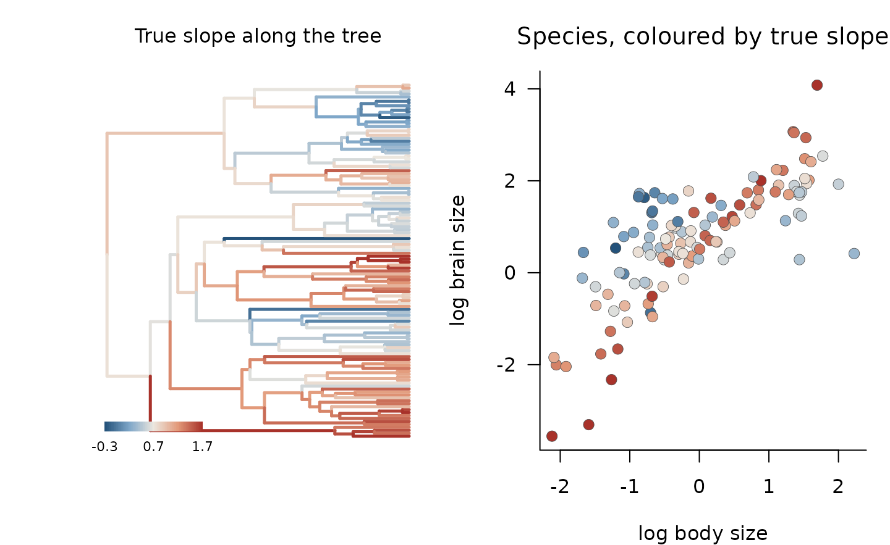
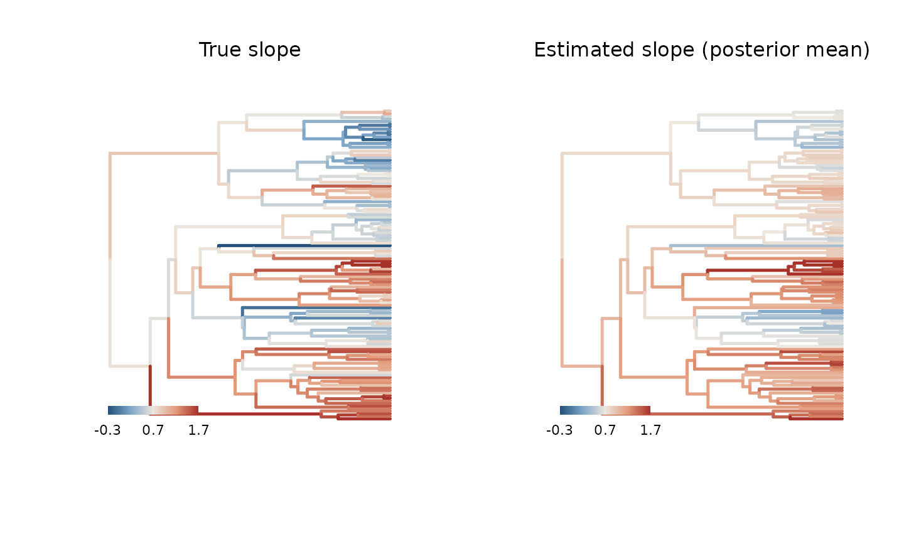
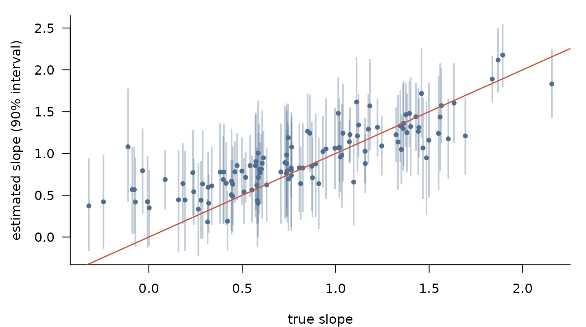
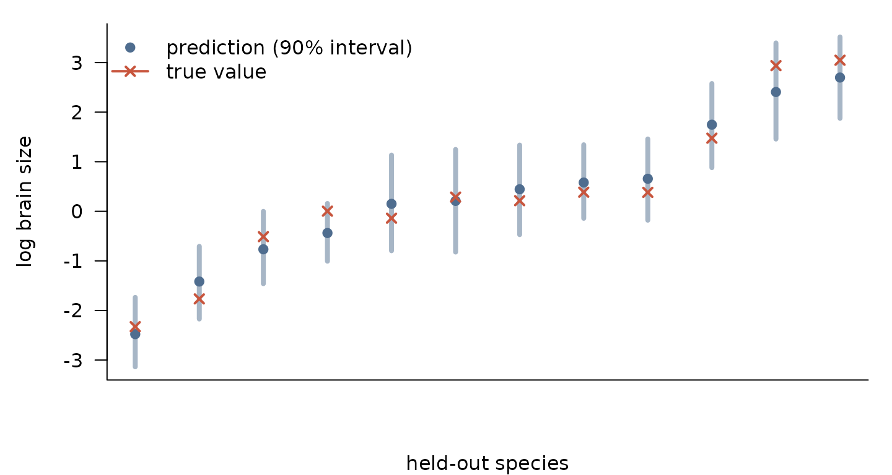
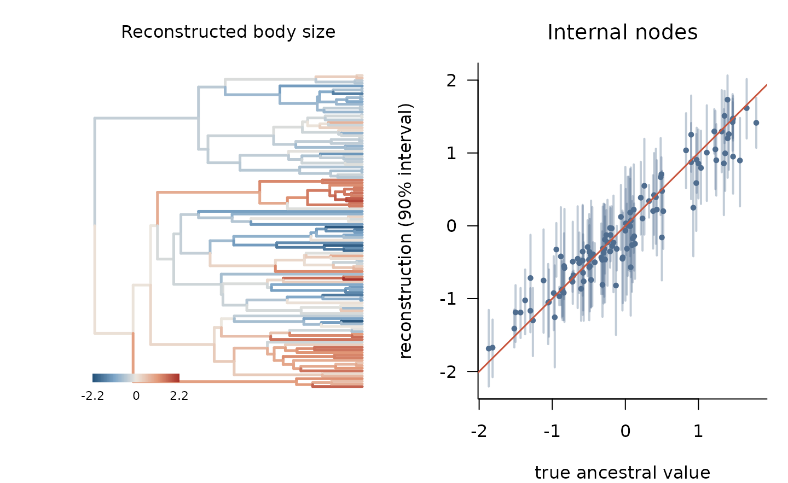
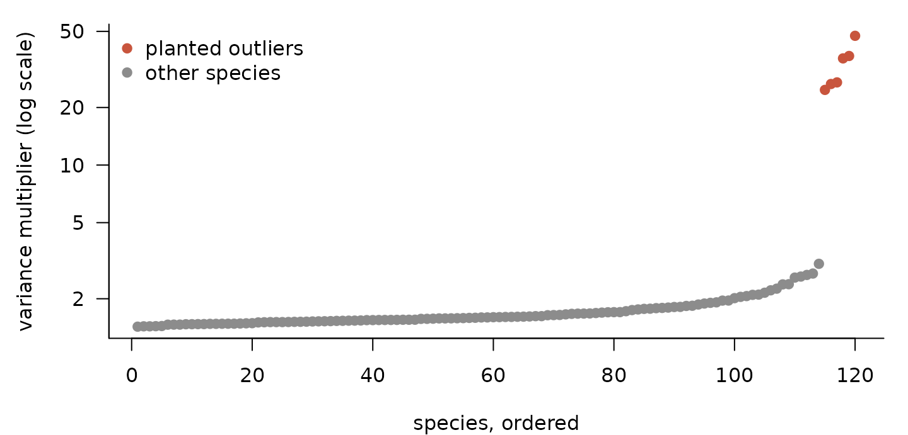

Slopes, prediction and robust residuals
Source:vignettes/slopes-prediction.Rmd
slopes-prediction.RmdThis vignette goes beyond fitting a single kernel:
- varying slopes: a regression slope that itself evolves along the tree, and how to tell it apart from a variance that simply grows with the predictor;
- influential species: exact leave-one-out for species whose importance-sampling estimate is unreliable;
- prediction: trait values for species without data, and ancestral states at internal nodes;
- robust residuals: Student-t residuals for data with outlying species.
All models here are fitted with Stan, so this vignette needs
cmdstanr and CmdStan.
Allometry with an evolving slope
A classic question in comparative biology is whether a scaling relationship, such as brain size on body size, is the same across a clade or itself evolves. We simulate a tree of 120 species, body sizes evolving by Brownian motion, and a brain–body slope whose deviation from 0.7 also evolves by Brownian motion along the tree.
library(phylogp)
set.seed(1)
tr <- ape::rphylo(120, birth = 1, death = 0)
tr$edge.length <- tr$edge.length / max(ape::node.depth.edgelength(tr))
N <- ape::Ntip(tr)
set.seed(100)
body_all <- ape::rTraitCont(tr, "BM", sigma = 1.5, ancestor = TRUE) # tips and nodes
slope_dev <- ape::rTraitCont(tr, "BM", sigma = 0.5, ancestor = TRUE, root.value = 0)
body <- body_all[tr$tip.label]
resid <- kernel_simulate(k_bm() + k_white(), tr,
pars = list(bm1 = list(sigma = 0.6), white1 = list(sigma = 0.15)))
d <- data.frame(body = body,
brain = 0.5 + (0.7 + slope_dev[tr$tip.label]) * (body - mean(body)) +
resid[tr$tip.label, 1])
true_slope <- 0.7 + slope_dev # at every node, in node-number order
op <- par(mfrow = c(1, 2), mar = c(4, 4, 3, 1))
plot_tree_values(tr, true_slope[tr$edge[, 2]], center = 0.7, lim = 1,
main = "True slope along the tree")
pal <- colorRampPalette(c("#24527A", "#7FA7C9", "#ECE7DF", "#E39A7A", "#A8322A"))(101)
idx <- round(50 * pmax(-1, pmin(1, (true_slope[seq_len(N)] - 0.7)))) + 51
plot(brain ~ body, data = d, pch = 21, cex = 1.2, bg = pal[idx], col = "grey30",
lwd = 0.4, las = 1, bty = "l", xlab = "log body size", ylab = "log brain size",
main = "Species, coloured by true slope", font.main = 1)
par(op)Three kernels, three hypotheses
We compare
- a constant slope with phylogenetic and residual variation;
- the same, plus residual variance that grows with body size, which is
k_slope("body") * k_white(): species-specific slope deviations that are not phylogenetically structured; - a slope that evolves along the tree,
k_slope("body") * k_bm().
Model 2 matters. A varying slope also makes the variance of brain size grow with distance from the mean body size, so a varying-slope model could win only because it captures this heteroscedasticity. Model 2 represents exactly that alternative, without any evolution of the slope.
f_const <- phylo_gp(brain ~ body, d, tr, k_bm() + k_white(), seed = 1)
f_het <- phylo_gp(brain ~ body, d, tr,
k_bm() + k_slope("body") * k_white() + k_white(), seed = 1)
f_vary <- phylo_gp(brain ~ body, d, tr,
k_bm() + k_slope("body") * k_bm() + k_white(), seed = 1)
f_vary
#> Phylogenetic Gaussian process
#> Formula: brain ~ body
#> Kernel: bm() + slope(body) * bm() + white()
#> Tips: 120
#> Likelihood: pruning (linear time)
#> Method: Bayesian (HMC)
#>
#> parameter mean sd q5 q95 rhat ess_bulk
#> 1 (Intercept) 0.799 0.2148 0.438 1.154 1 5245
#> 2 body 0.949 0.2614 0.517 1.375 1 3295
#> 3 bm1_sigma 0.483 0.0830 0.354 0.625 1 1590
#> 4 slopebm1_sigma 0.578 0.0913 0.437 0.733 1 1031
#> 5 white1_sigma 0.200 0.0342 0.149 0.259 1 2399The slopes are fitted as latent values at the nodes of the tree, so
each gradient evaluation stays linear in the number of species.
body is centred at its mean, the reference point for the
slope deviations.
loo_vary <- loo(f_vary)
loo::loo_compare(list("constant slope" = loo(f_const),
"heteroscedastic control" = loo(f_het),
"evolving slope" = loo_vary))
#> model elpd_diff se_diff p_worse diag_diff diag_elpd
#> evolving slope 0.0 0.0 NA 3 k_psis > 0.7
#> constant slope -19.7 7.1 1.00
#> heteroscedastic control -21.2 6.5 1.00The evolving slope predicts left-out species much better than both alternatives, and the heteroscedastic control does no better than the constant slope: the improvement comes from phylogenetic structure in the slope, not from the variance pattern alone.
Influential species
The flags above mean a few species have Pareto
:
removing them changes the posterior enough that the importance-sampling
estimate of their leave-one-out density is unreliable.
loo_refit() refits the model without each of them and
replaces their contribution by the exact value.
loo_vary_exact <- loo_refit(f_vary, loo = loo_vary)
attr(loo_vary_exact, "refitted")
#> [1] "t25" "t76" "t116"
loo::loo_compare(list("constant slope" = loo(f_const),
"evolving slope" = loo_vary_exact))
#> model elpd_diff se_diff p_worse diag_diff diag_elpd
#> evolving slope 0.0 0.0 NA
#> constant slope -19.5 7.0 1.00The conclusion stands once the influential species are handled exactly.
Where does the slope change?
varying_slopes() returns the posterior slope at every
node, and plot_tree_values() maps it onto the tree.
vs <- varying_slopes(f_vary)
op <- par(mfrow = c(1, 2))
plot_tree_values(tr, true_slope[tr$edge[, 2]], center = 0.7, lim = 1,
main = "True slope")
ft <- f_vary$tree
plot_tree_values(ft, vs$mean[ft$edge[, 2]], center = 0.7, lim = 1,
main = "Estimated slope (posterior mean)")
par(op)
tips <- vs[!is.na(vs$label), ]
truth <- true_slope[tips$label]
op <- par(mar = c(4, 4.5, 1, 1))
plot(truth, tips$mean, type = "n", las = 1, bty = "l",
ylim = range(tips$q5, tips$q95), xlab = "true slope",
ylab = "estimated slope (90% interval)")
segments(truth, tips$q5, y1 = tips$q95, col = adjustcolor(cols["blue"], 0.35), lwd = 2)
points(truth, tips$mean, pch = 19, cex = 0.7, col = cols["blue"])
abline(0, 1, col = cols["red"], lwd = 1.5)
par(op)
c(correlation = cor(truth, tips$mean),
coverage_90 = mean(tips$q5 < truth & truth < tips$q95))
#> correlation coverage_90
#> 0.837695 0.900000Species-level slopes are shrunk towards those of their relatives, so clades with few species and extreme slopes are pulled towards the middle, but the pattern along the tree is recovered.
Predicting species without data
Gaussian-process prediction on a tree is kriging: a species’ value is predicted from its relatives through the kernel. Here we hold out 12 species, fit the model to the rest, and predict them from their body sizes and positions in the tree.
set.seed(3)
held <- sample(rownames(d), 12)
f_pred <- phylo_gp(brain ~ body, d[setdiff(rownames(d), held), ], tr,
k_bm() + k_white(), seed = 1)
pr <- predict(f_pred, newdata = d[held, ])
pr$observed_value <- d[pr$species, "brain"]
pr <- pr[order(pr$mean), ]
op <- par(mar = c(4, 4.5, 1, 1))
plot(seq_along(pr$mean), pr$mean, ylim = range(pr$q5, pr$q95, pr$observed_value),
type = "n", las = 1, bty = "l", xaxt = "n", xlab = "held-out species",
ylab = "log brain size")
segments(seq_along(pr$mean), pr$q5, y1 = pr$q95, col = adjustcolor(cols["blue"], 0.5), lwd = 4)
points(seq_along(pr$mean), pr$mean, pch = 19, col = cols["blue"])
points(seq_along(pr$mean), pr$observed_value, pch = 4, lwd = 2, col = cols["red"])
legend("topleft", c("prediction (90% interval)", "true value"), pch = c(19, 4),
col = cols[c("blue", "red")], lwd = c(NA, 2), bty = "n")
par(op)For species that were fitted, predict(fit) without
newdata gives smoothed values that also use the species’
own data.
Ancestral states
Ancestral states are predictions at the internal nodes of the tree.
ancestral() computes them in linear time, averaged over the
posterior. Because we simulated the whole history, we can compare them
with the truth.
f_anc <- phylo_gp(body ~ 1, data.frame(body = body), tr, k_bm(), seed = 1)
anc <- ancestral(f_anc, tips = TRUE)
anc$truth <- body_all[anc$node]
internal <- anc[anc$node > N, ]
op <- par(mfrow = c(1, 2), mar = c(4, 4, 3, 1))
ft <- f_anc$tree
plot_tree_values(ft, anc$mean[ft$edge[, 2]], center = 0,
main = "Reconstructed body size")
plot(internal$truth, internal$mean, type = "n", las = 1, bty = "l",
ylim = range(internal$q5, internal$q95), xlab = "true ancestral value",
ylab = "reconstruction (90% interval)", main = "Internal nodes", font.main = 1)
segments(internal$truth, internal$q5, y1 = internal$q95,
col = adjustcolor(cols["blue"], 0.35), lwd = 2)
points(internal$truth, internal$mean, pch = 19, cex = 0.6, col = cols["blue"])
abline(0, 1, col = cols["red"], lwd = 1.5)
The intervals widen towards the root, where fewer descendants inform
the estimate. Under an Ornstein–Uhlenbeck kernel,
ancestral() uses the OU process itself; under Pagel’s κ or
δ, the reconstruction refers to the transformed tree.
Outlying species
Data sets of real species often contain a few values that no smooth
evolutionary model expects: domesticated species, measurement errors, or
genuinely exceptional lineages. Under Gaussian residuals such species
pull the estimates. k_white(df = 4) gives Student-t
residuals instead: each species gets its own variance multiplier, so an
outlier is explained by a large multiplier rather than by distorting
everything else.
set.seed(4)
y2 <- 0.5 + 0.7 * body +
kernel_simulate(k_bm() + k_white(), tr,
pars = list(bm1 = list(sigma = 0.5), white1 = list(sigma = 0.15)))[tr$tip.label, 1]
outliers <- sample(tr$tip.label, 6)
y2[outliers] <- y2[outliers] + 2
d2 <- data.frame(body = body, brain = y2, row.names = tr$tip.label)
f_gauss <- phylo_gp(brain ~ body, d2, tr, k_bm() + k_white(), seed = 1)
f_t <- phylo_gp(brain ~ body, d2, tr, k_bm() + k_white(df = 4), seed = 1)
loo::loo_compare(list("Gaussian residuals" = loo(f_gauss),
"Student-t residuals" = loo(f_t)))
#> model elpd_diff se_diff p_worse diag_diff diag_elpd
#> Student-t residuals 0.0 0.0 NA
#> Gaussian residuals -42.2 5.2 1.00
rbind(Gaussian = summary(f_gauss)[2, ], "Student-t" = summary(f_t)[2, ])
#> parameter mean sd q5 q95 rhat ess_bulk
#> Gaussian body 0.7625714 0.06985812 0.6449417 0.8785471 1.000194 4035.959
#> Student-t body 0.7360951 0.04469396 0.6623558 0.8080492 1.002082 6925.799The posterior variance multipliers point to the outlying species:
lam <- colMeans(posterior::as_draws_matrix(f_t$fit$draws("white1_lam")))
is_out <- f_t$tree$tip.label %in% outliers
op <- par(mar = c(4, 4.5, 1, 1))
plot(sort(lam), pch = 19, log = "y", las = 1, bty = "l",
col = ifelse(is_out[order(lam)], cols["red"], cols["grey"]),
xlab = "species, ordered", ylab = "variance multiplier (log scale)")
legend("topleft", c("planted outliers", "other species"), pch = 19,
col = cols[c("red", "grey")], bty = "n")
par(op)With Student-t residuals the slope estimate is closer to the true 0.7 and more precise, and leave-one-out strongly prefers the robust model. For real data, both models are worth reporting: the multipliers show which species drive the difference.